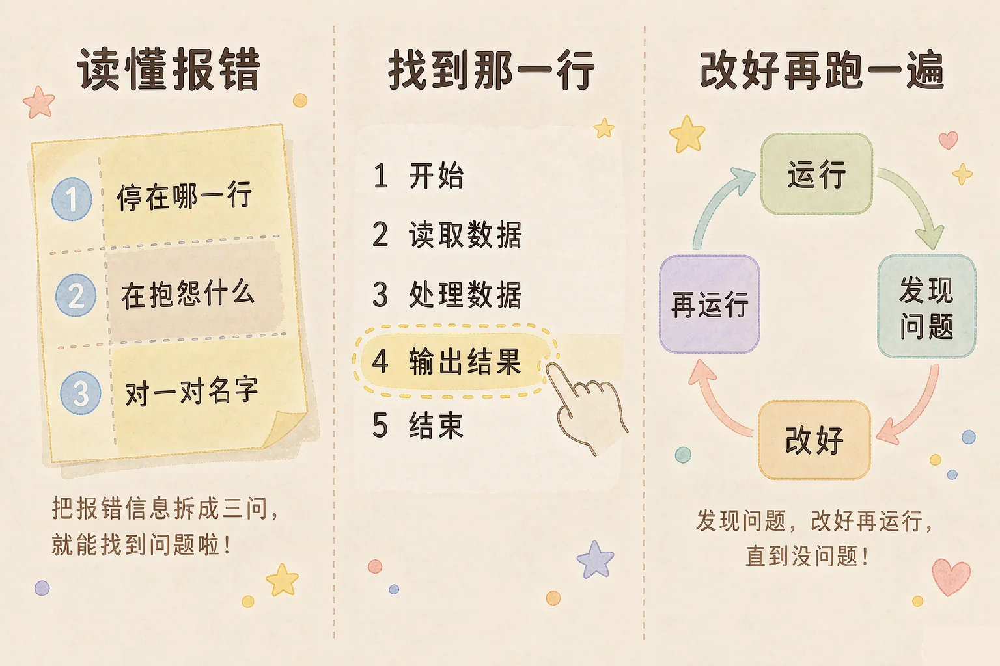
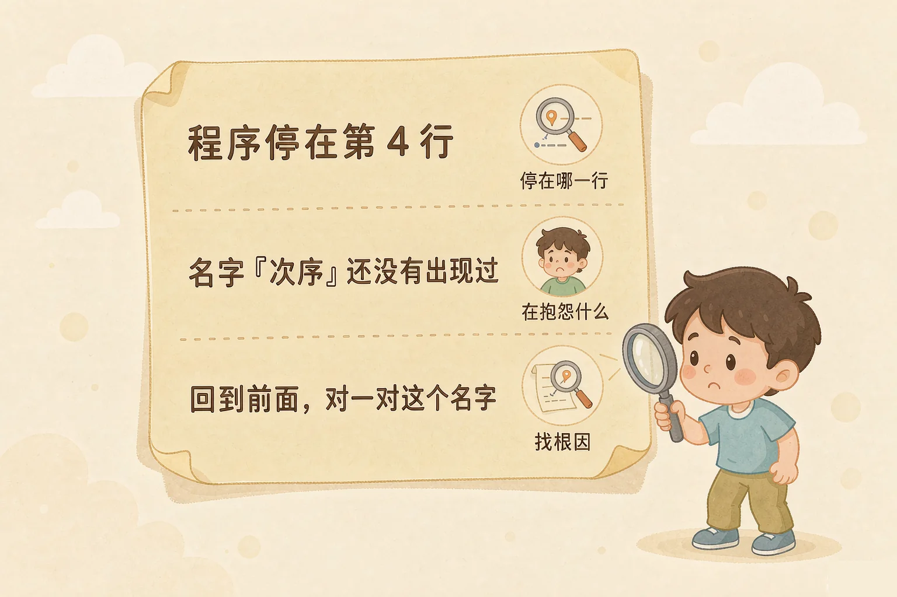
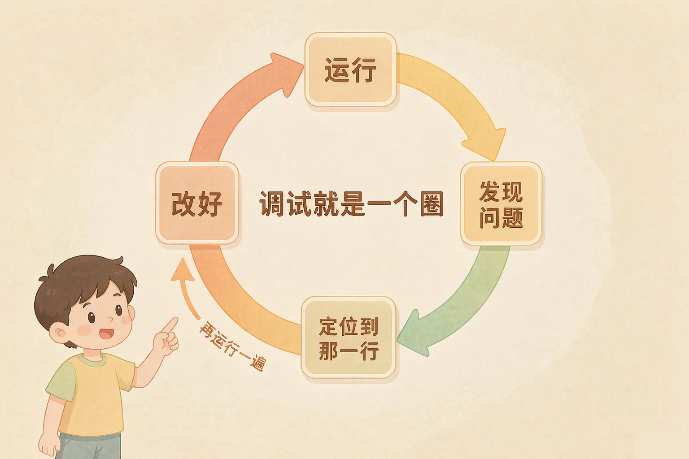

Gallery
v1.0.0 · skill v7.22.0
小学五年级 · 算法与程序
做菜太咸了，你会尝一口、想一想、少放一点盐——程序出了错，你也会这么做吗？

选一个你真正好奇的问题，后面的动手活动都会围着它转。
选择或输入后，这节课会围绕你的问题展开。
先凭直觉选一个，选完立刻看到解释——错了也没关系，正好知道要重点听哪里。
1. 程序运行时停下来，并且显示了一行报错信息。最该先做的是：
报错信息是程序在帮你：它告诉你停在哪一行、抱怨的是什么。错因提醒：常见错误是一看到报错就整段重写——其实问题常常只在某一行的某几个字上。
2. 程序跑完了，也没有报错，可是给你的结果不对。这说明：
不报错的错误是逻辑错，要靠自己用小手算一遍答案再去对照。错因提醒：别误认为「不报错就是对的」——跑得通和算得对，是两回事。
3. 把程序改好以后，为什么一定要重新运行一遍？
改完不跑，就等于没改——验证是调试里少不了的最后一步。错因提醒：不少同学改完就交上去了，结果同一个错误又出现了。改一次、跑一次，最稳。
为什么要学这一课？
我们已经能让程序走分支、转循环了（And）；可一旦程序停下来，很多同学的第一反应是「整段重写」，改了半天又踩进新的坑（But）；其实程序停下来的时候，它会把线索一起交给你，只要会读就能省下大半力气（Therefore）。
报错信息要按顺序读三件事——读对了顺序，一半的问题当场就清楚了。

以为报错的行号就是要改的行，于是只看那一行。多数时候那一行确实是改动的落点，但有时它只是「被绊倒的地方」——比如前面起的名字和这里用的名字不一样。所以读完报错，要回到那个名字第一次出现的地方对一对。
🔍 深层理解 换个角度再看一遍这件事，看看能不能说出背后的原理。
看见它：报错信息的样子其实三行就够：一个位置、一句抱怨、偶尔加一句建议。看清三块，剩下的就是照着一行行对。
拆开它：为什么程序能指出位置？因为它是照着顺序一行一行做的，走到哪一行做不下去，它自己最清楚。
迁移它：这份读法放到生活里也好用：机器报的错、老师改的红笔、同学说的「看不懂」，都是线索，不是责怪。
这段记录跑步总分的程序跑不动了。请你点一点报错信息里的三块线索卡，看程序里哪一行会亮起来、每句话在说什么；最后判断真正要改的是哪一行。
先点一张线索卡，看看对应的那一行怎么亮起来。
程序里的问题分两种：一种看得见，一种看不见。看不见的那一种，才最需要方法。
看得见的错：程序会停下来
名字写错、语句放错位置、条件没写完……程序做不下去了，它会停下来，并把行号和抱怨一起告诉你。按概念一的三步就能读。
看不见的错：跑完但结果不对
程序一路做到底，没有一点抱怨，只是给你的答案不对。它不吭声，只能靠你自己去发现——这是最容易漏掉的一种。

看不见的错，靠这一招：先自己用小手算一遍。
挑一个小一点的数据，自己把答案算出来（比如三天的个数加起来是多少），再和程序给的结果对一对。对不上，就去数它转了几圈——多半是某一步多做了一次，或者少做了一次。这一步一用到，看不见的错也就看得见了。
以为「程序跑完了就是对的」。跑得通，只说明它没被绊倒；算得对，才算真的对。另一个常见错误是改完就交——改一次、跑一次，确认这一次真的对上了，这一步不能省。
两个关卡，每关都有一段跑不通的程序和它的报错信息。请点一点你认为出问题的那一行：点对了会告诉你错在哪里，还会出现一个修正按钮。
点一点你认为出问题的那一行。
点一点你认为出问题的那一行。
题目：三天的跳绳个数是 120、150、130，要把它们加起来。程序的循环条件是「当 天数 < 3 时」，天数从 1 开始，最后输出 270。它错在哪里？
先去看最后那个「输出」那一行——以为打印的方式有问题。其实输出的写法没有错，是它拿到的数字本身就少了一天。另一个常见错误是跳过第 1 步：不先算一遍正确答案，就不知道程序该给多少，自然也就发现不了它错了。
先凭直觉选一个，选完立刻看到解释——错了也没关系，正好知道要重点听哪里。
1. 报错信息说「第 6 行：名字「结杲」还没有出现过」。最该先看的是：
报错说它不认识这个名字，那就回去找这个名字该在哪一行被起过。错因提醒：常见错误是删行或全改——名字对不上只是几个字的问题，改对那几个字就够了。
2. 程序跑完了，也没有报错，但答案明显偏小。可能性最大的是：
答案差一份，通常是「轮次」差了一圈——去数它转了几圈。错因提醒：这类错误不会报错，要先自己算一遍答案，才知道它差了多少。
3. 改好一处之后，最好怎么做？
改一次、跑一次，出问题也能马上知道是哪一处带来的。错因提醒：一次性改很多处再运行，万一还是不对，就分不清是哪一处没改好了。
这段程序能一路跑到底，也不报错，可是跳绳总数就是少了一天的量。请先自己算一遍，再单步执行看它转了几圈，最后把出问题的那一处改好、重新运行。
数据（三天的跳绳个数）
第一天 120 个 · 第二天 150 个 · 第三天 130 个
先点「我自己先算一遍」，再点单步执行。
再想一想（改动怎样才能最小）：如果以后要统计五天，这个程序需要改几处？
先凭直觉选一个，选完立刻看到解释——错了也没关系，正好知道要重点听哪里。
1. 自动售货机程序报错：「第 7 行：名字「找零」还没有出现过」。最合理的下一步是：
还是那条老规矩：报错说名字不认识，就回去对一对名字。错因提醒：别一看到报错就删代码——删掉之后原来的功能也没了。
2. 体温登记表程序把同一个人的记录打印了两次，但它没有报错。最该先做的是：
先算清楚「应该几条」，才知道「多了几条」，问题就好找了。错因提醒：不报错的错误，永远靠「先自己算一遍」才抓得住。
3. 一段程序你改了三次才对。关于这三次修改，下面说法正确的是：
小步改、小步验，是经验丰富的做法；一次改太多，出错时反而分不清原因。错因提醒：别误认为「改了很多次」是笨——能一步步收敛到正确结果，正是调试的本事。
回到开头那锅太咸的菜：你尝一口、想一想、少放一点盐，再尝一口——这就是调试。程序出错不是坏事，它只是还没被调好；而你已经有了一套能一遍遍用下去的办法。
给别人讲一遍：请用「报错、两种错、再跑一遍」这三个词，说清楚你会怎么处理一段出问题的程序。
再动一动手：写下来——给今天课上遇到的两次错误各写一行「出错记录」：错在哪一行、为什么错、最后怎么改的。
三层练习，做完第一、二层就算通关；第三层留给愿意继续探索的同学。
⭐ 基础巩固（必做）
⭐⭐ 能力应用（必做）
⭐⭐⭐ 迁移挑战（选做）
左边是学它之前要先会的，右边是学会之后可以继续探索的，下面是同一领域的伙伴知识。
图谱正在加载：首次进入需下载知识索引（约 1–3 秒），加载完成后本行会自动消失。